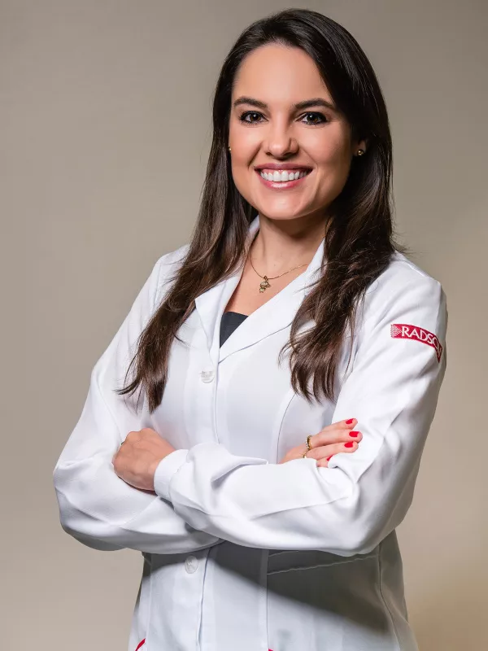
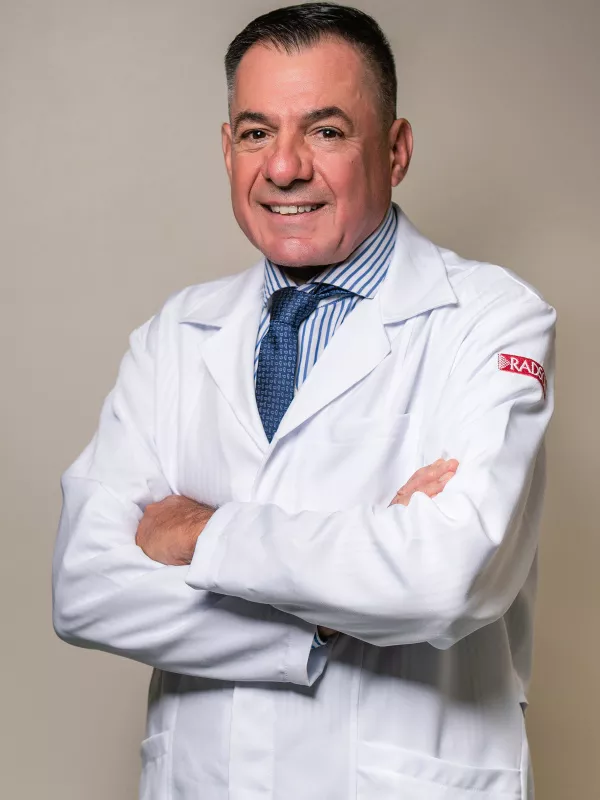
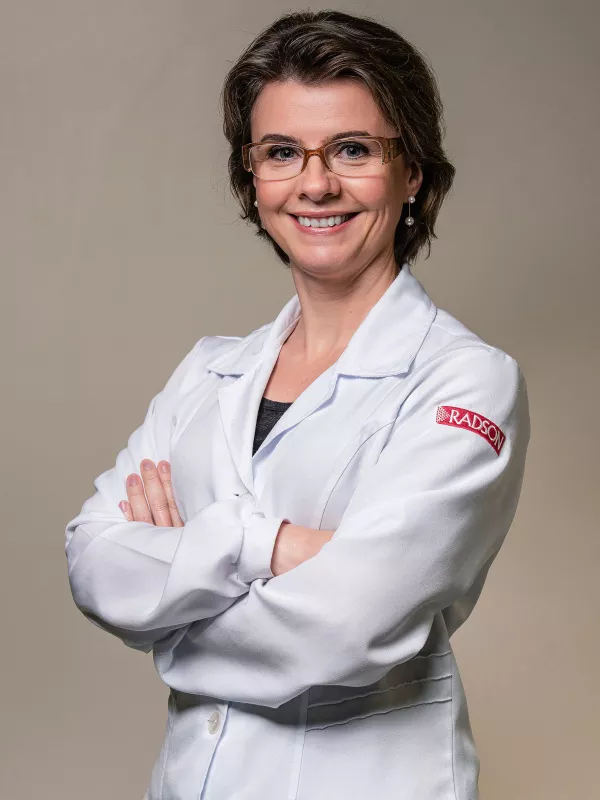
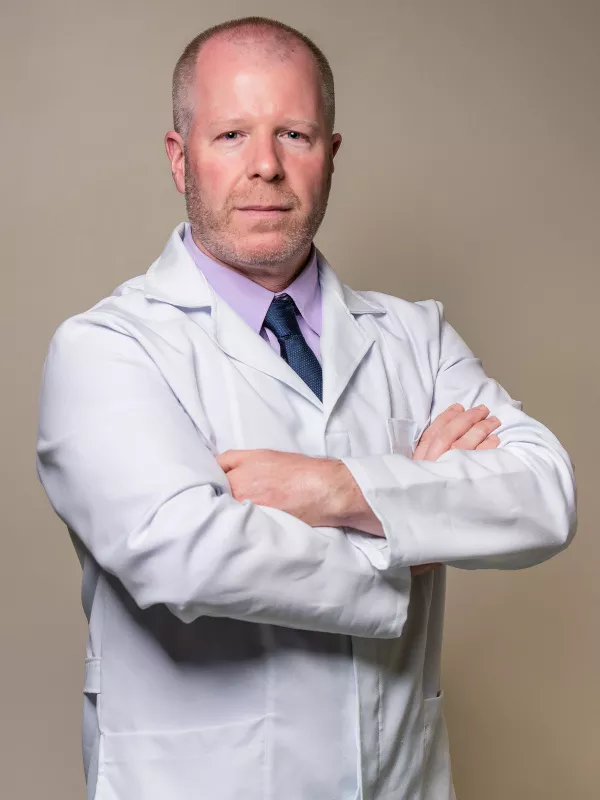
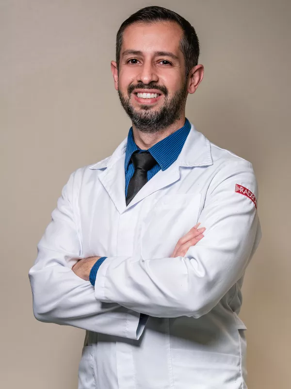
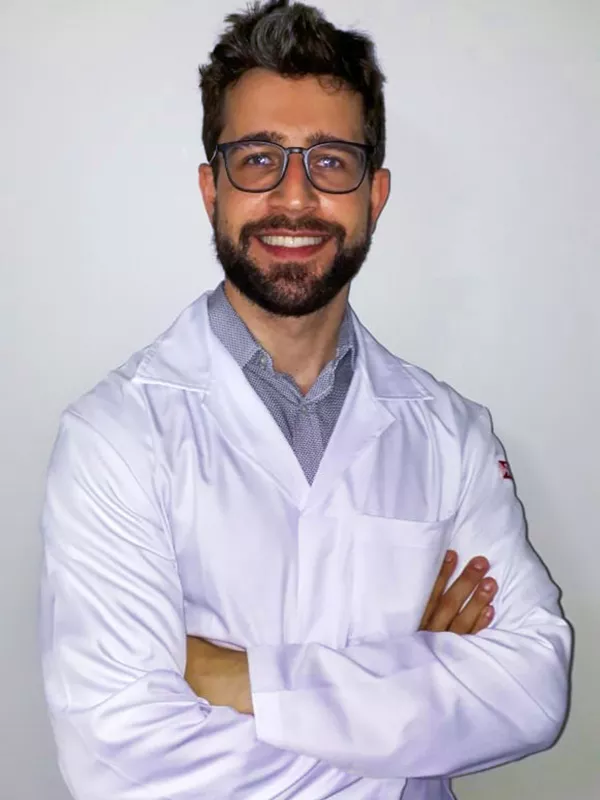
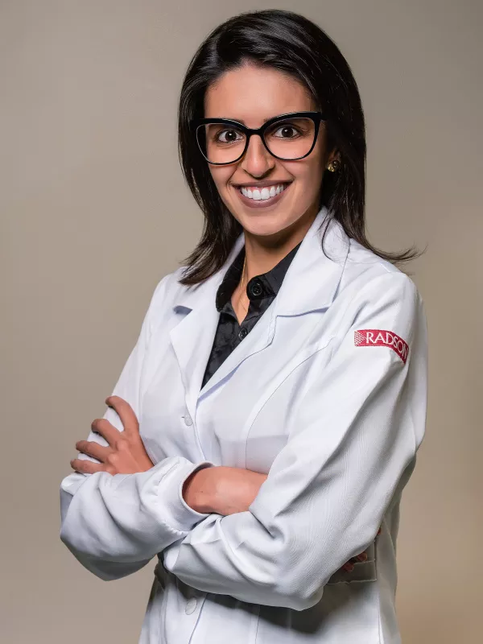

Equipe Médica
Conheça nossa equipe médica, altamente qualificada e dedicada à excelência em diagnóstico.
Dra. Carmela Krebs
Membro titular do Colégio Brasileiro de Radiologia

A Dra. Carmela Krebs é médica radiologista, graduada em Medicina pela Fundação Faculdade Federal de Ciências Médicas de Porto Alegre, com residência médica realizada no Serviço de Radiologia do Hospital Mãe de Deus, em Porto Alegre. Especialista em Diagnóstico por Imagem com Fellow na área de Músculo-esquelético, ela é membro titular do Colégio Brasileiro de Radiologia e Diagnóstico por Imagem. A Dra. já atuou no Hospital Mãe de Deus e Mãe de Deus Center, Ulbra Hospital Universitário, Hospital Regina de Novo Hamburgo e no Hospital Militar de Porto Alegre, especialmente nos exames de Tomografia Computadorizada e Ressonância Magnética.
Atualmente, além de médica radiologista, a Dra. Carmela é sócia proprietária do RADSON desde 2011.
Siga no Instagram o perfil: @dracarmelakrebs
Dr. Paulo Krebs
Membro titular do Colégio Brasileiro de Radiologia

O Dr. Paulo Krebs, médico radiologista, é graduado em Medicina pela Universidade Federal de Santa Maria, com residência médica em Serviço de Radiologia da Irmandade da Santa Casa de Misericórdia de Porto Alegre. Especialista em Diagnóstico por Imagem, o Dr. é membro titular da Associação Médica Brasileira e Colégio Brasileiro de Radiologia.
Em 1987 fundou o Centro Radiológico RADSON e é o responsável técnico. O Dr. Paulo Krebs executa exames de ecografia, mamografia, densitometria óssea e tomografia computadorizada.
Dra. Deisi Tosetto Amaral
Membro titular do Colégio Brasileiro de Radiologia

A Dra. Deisi Tosetto Amaral, médica radiologista, é graduado em Medicina pela Universidade Federal do Rio Grande do Sul e possui residência médica em radiologia, realizada na Clínica de Radiologia Serdil, em Porto Alegre, onde posteriormente atuou como radiologista. Ela também já atuou no Hospital da Ulbra, em Canoas, e é membro titular do Colégio Brasileiro de Radiologia.
Há 20 anos a Dra. Deisi é uma das médicas que fazem parte do corpo clinico do RADSON.
Dr. Ricardo Kaufmann
Membro titular do Colégio Brasileiro de Radiologia

O Dr. Ricardo Kaufmann é graduado em Medicina pela Universidade Federal de Pelotas e possui residência em radiologia e diagnóstico por imagem no Instituto de Cardiologia e no Hospital Ernesto Dornelles, em Porto Alegre. Ele trabalhou como preceptor de residência de radiologia intervencionista, punções e biópsias, por 16 anos, e como ecografista geral no Hospital Ernesto Dornelles.
O Dr. Ricardo, que é membro titular do Colégio Brasileiro de Radiologia, atua como médico radiologista do RADSON há 11 anos, trabalhando com exames de raio-x, mamografia, ecografia, punções e biópsias.
Dr. Diego Pereira
Membro titular do Colégio Brasileiro de Radiologia

O Dr. Diego Pereira é membro titular do Colégio Brasileiro de Radiologia, graduado em Medicina pela Universidade Católica de Pelotas e possui especialização em ultrassonografia, radiologia e diagnóstico por imagem realizadas no Hospital Mãe de Deus em Porto Alegre.
O Dr. Diego faz parte do corpo clinico do RADSON desde 2016, realizando exames de ultrassonografia geral e Doppler, além de laudos de tomografia.
Dr. Gustavo Ferreira Goettert
Cirurgião Vascular e Endovascular, e membro titular do Colégio Brasileiro de Radiologia

O Dr. Gustavo Ferreira Goettert é cirurgião vascular e endovascular, graduado em Medicina pela Universidade Federal de Ciências da Saúde de Porto Alegre, com residência médica em Cirurgia Geral, Angiologia e Cirurgia Vascular. Além de possuir especialização nessas áreas, o Dr. Gustavo é especialista em Ecografia Vascular com Doppler.
O Dr. Gustavo, que também atua como professor no curso de Medicina da Unisc, faz parte do time RADSON desde 2015.
Dra. Gabriela Canabarro
Membro titular do Colégio Brasileiro de Radiologia

A Dra. Gabriela é médica radiologista, graduada em Medicina pela Universidade Federal de Santa Maria, com residência médica em Radiologia e Diagnóstico por Imagem pelo Hospital Universitário de Santa Maria. Ela é especialista em Diagnóstico por Imagem com Fellow na área de Músculo-esquelética junto à Medvia Diagnóstico/Grupo Mérya e membro titular do Colégio Brasileiro de Radiologia.
Em 2020, a Dra. Gabriela integrou o corpo clínico do RADSON e hoje é responsável pela realização dos exames.